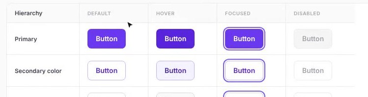
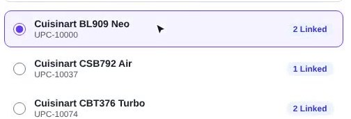
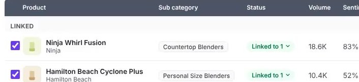

At Revuze I kept hitting the same three walls: testing ideas with users, showing features to clients before they existed, and handing designs to developers without losing detail. I built a portal of AI-built, working prototypes, on a coded design system that follows the rules of our Angular product.
Revuze's product is dense: thousands of products, reviews, tickets and AI insights on one screen. Static Figma prototypes showed how a feature looked, not how it behaved with real data. That gap showed up in three places.
Users reacted to click-through images, not the feature. We couldn't see how they used filters, long lists or AI answers until it was built.
Sales and product needed to show clients features before development. Figma frames were hard to present and easy to misread.
States, edge cases and data behavior lived in written specs. Developers filled the gaps, and corrections came late, when they cost most.
Under all three sat the design system: one very large Figma file, with no Storybook and no coded components. Developers rebuilt components from screenshots, and nothing tied a design to what Angular could render.
I was the only designer at Revuze, working with product managers and R&D leads.
I started building features with Claude connected to Figma through MCP. The first results were fast but inconsistent: Claude invented colors, spacing and components our Angular app did not have. The prototypes looked right but could not be built as drawn.
Before AI could build reliable prototypes, it needed rules. So the design system came first.
| Option | Upside | Why I didn't stop there |
|---|---|---|
| Keep the Figma file, add documentation | No new tools | Still a picture. AI and developers still guess the behavior. |
| Storybook | Industry standard for coded components | Needs engineering time we didn't have. |
| Figma prototypes only | Fast, familiar | Can't show real data, loading or errors. |
| Coded design system + working prototypes | One source for AI, design and dev | Chosen. Mirrors Angular's limits, so what AI builds is what dev can ship. |
The key decision was to encode the system's restrictions, not only its look. Each component exposes exactly the sizes, hierarchies and states the Angular component supports. Claude can only use what exists.
The Figma file became a living component site. Each component shows all its states and sizes, with an Angular tab of code developers copy into the app. The repo tells Claude to use only these tokens and components, and a small Figma plugin generates new Badge sizes from existing ones.
Every feature is built with Claude on the design system and published to one internal site behind company sign-in, with a stable link and a live preview. Options for the same feature sit together in a folder.
Alerts tell a brand when something changes, such as a spike in product defects. We tested the full setup flow as a working prototype, with real catalog data and AI pre-filling the settings.
Testing showed two things. The flow had too many decisions, so I simplified it: AI pre-fills what it can and the user confirms each answer with a chip. Users also hit edge cases we hadn't planned for, like adding the same email twice, and each went into the spec before development.
I presented the QA ticket flow to a few clients before development. Their feedback, based on real tickets, reshaped how ticket data is structured.
They also told us what took most of their time: linking their products to the Revuze catalog. That became the next feature.
Brands link their catalog to Revuze's, many products to many. Reviewing the prototype with engineering replaced pagination with infinite scroll and merged two views into one table. The handoff doc covers behavior only and records both changes.

Default, hover, focus and disabled, matched to the Angular component

Each catalog product shows how many links it has

Linked items sit on top with their status, before saving
| Result | Evidence |
|---|---|
| Up to 50% less development time on prototype-led features | Estimate with the application team's lead developer |
| A simpler alerts flow, with edge cases like duplicate emails specified before development | User testing on the prototype |
| Ticket data shaped by real client tickets; product linking identified as clients' biggest time sink | Client sessions on the QA ticket flow |
| Product linking spec simplified before development: infinite scroll, one table | Handoff doc |
| The Figma file replaced by a coded system that AI and developers share. 38 prototypes, built by one designer | Hubs Design System v1.0, Prototype Portal |
AI made prototyping fast, but only rules made it reliable. A working prototype also put real behavior in front of users and clients early enough to change what we built. The most valuable design work here wasn't a screen: it was defining what the system allows, so people and AI build the same thing.